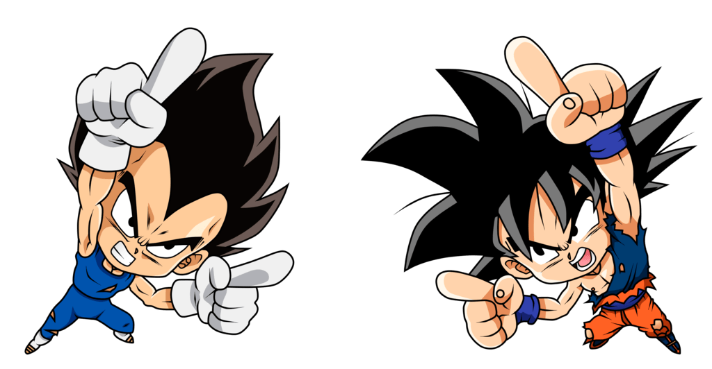

¡Bienvenido a Dragon Ball Super: Animation!
Aquí conocerás a los mejores animadores que han hecho espectacular a la serie de animación Dragon Ball Super. Algunos son viejos conocidos en la franquicia, otros son recién llegados a ella, pero ninguno defrauda. A excepción de alguno...
Dragon Ball Super empezó con una pre-producción pésima. El tiempo entre
episodios era mínimo provocando que los tiempos para animar fueran de 3 a 5
semanas (para conseguir una calidad aceptable se necesitan mínimo 8 semanas).

Pero poco a poco la calidad fue aumentando hasta el punto de crear animaciones
nunca vistas en términos de calidad hasta el punto de hacer este tipo de
maravillas

Para no hacer la lista infinita, vamos a tratar a:
Tadayoshi Yamamuro, supervisor de animación desde el fin de GT, creador del estilo "moderno" de Dragon Ball.
Naotoshi Shida, animador desde la serie original. Es el animador clave en las momentos decisivos.
Naoki Tate, animador desde Dragon Ball Z. Animador con un estilo inconfundible. Sus escenas ofrecen mucho dinamismo
Yuya Takahashi, recién llegado al mundo de Dragon Ball, pero con solo unas 5 escenas a su espalda ya se ha convertido en un animador de renombre